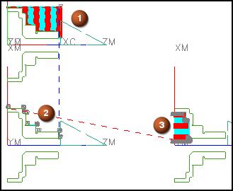

预计完成此练习需要：12–18 分钟
在这个练习中，您将打开一个包含三个部件的装配模型，每个都安装在各自的主轴上(1, 2, 3)，您将在第一个主轴上定义初始毛坯几何体，生成刀轨并使用生成的 IPW 作为第二个主轴下一个工序的的毛坯几何体。然后重复这个过程以在第二和第三个主轴上生成刀轨。

开始 创建并使用 IPW
要获取更多信息，参见：
帮助→CAM (加工)→铣加工→刀轨设置→切削参数→切削参数选项→空间范围选项卡→处理中的工件(IPW)